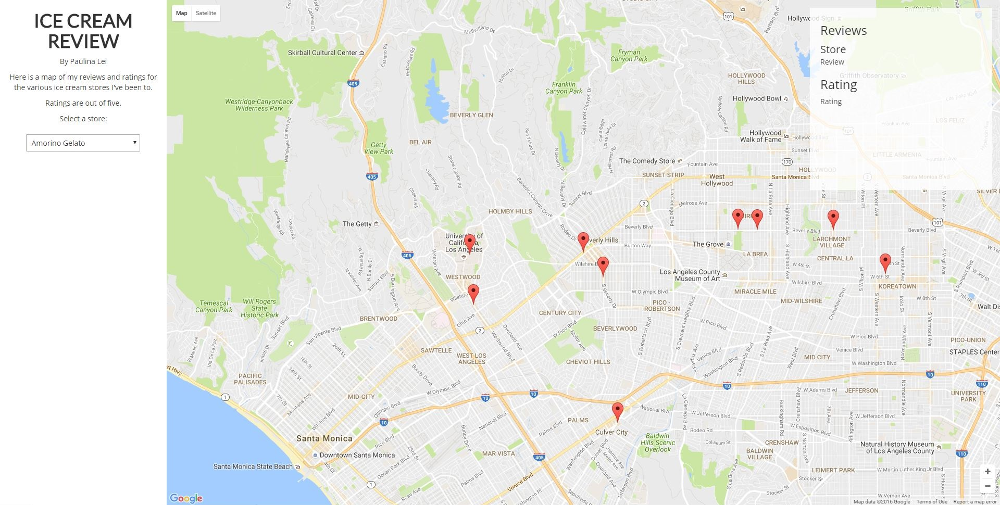

Code Projects
Graduation Issue 2016
Every year, the Daily Bruin has a graduation issue, which is a 40-page paper that looks back on what happened at UCLA for the past school year.
This is the website that two staff members and I created to accompany the printed version.
The design for the website is meant to mimic our school login site.
Used Bootstrap, Handlebars.js, Slick.js, Typed.js, Isotope.js, Magnific Popup
Ice Cream Review
This is a map displaying all the ice cream stores I've been to, and it will be constantly updated as I go to more stores.
It also displays my reviews and ratings for each store.
Used Bootstrap, Google Maps Javascript API
Orientation Issue 2016
Every year, the Daily Bruin has an orientation issue that has articles for incoming freshmen. The guide talks about school life, from student government to classes to clubs. This page was developed as a hub for all the articles
Used Bootstrap, Fluffy.js
Expo Line 2016
A staff member of the Daily Bruin and I created this web page to display the articles written about Los Angeles' new expo line in 2016.
Used Bootstrap
Alterraun Verner Feature
I developed this page for a feature on Alterraun Verner, a UCLA alumnus and player for the Tampa Buccaneers, a football team.
Used Bootstrap, Magic.css
Brett Tashman Feature
I developed this webpage as an obituary for Brett Tashman, who was a UCLA basketball manager that passed away due to cancer.
Used Foundation, Parallax.js
Publications
UCLA researchers develop camera, technique to find cancerous tissue
This was an article I wrote about research done in the Bioengineering department.
It focused on the development of a camera and new imaging techniques in order to identify cancer cells in tissue.
I pitched, interviewed, wrote, copy edited, and published the story.